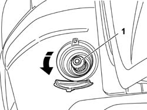

1042A30 cng cylinder recharge valve cock - r r
- Path
- Procedures > 10 ENGINE > 1042 (METHANE) CNG CANISTER AND PIPES > 1042A methane gas cannister and tubes for re-charging > 1042A30 cng cylinder recharge valve cock - r r
- Kind
- repair procedure (removal / refitting; the operation number is the code)
- Applies to
- all engines; all production periods; only with equipment: BIPOWER
- Interactive page
- https://sloeber94.github.io/elrnDB-fDbl/en/#/2584522
Applies to: all engines; all production periods; only with equipment: BIPOWER
 Removing
Removing
 Refitting
RefittingOpen the access flap on the left side of the rear bumper.
1. Undo the cap in an anti-clockwise direction and remove it.

Applies to: all engines; all production periods; only with equipment: BIPOWER
Refitting
RemovingTighten the cap in a clockwise direction.
Close the access flap.